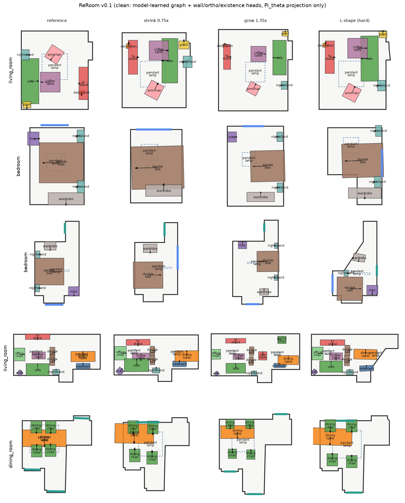
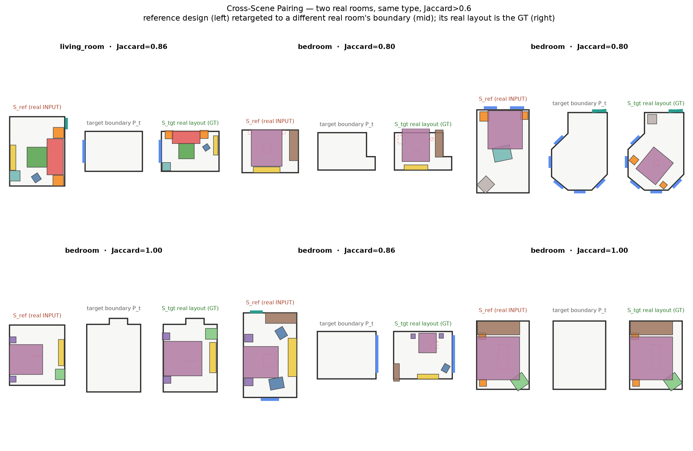
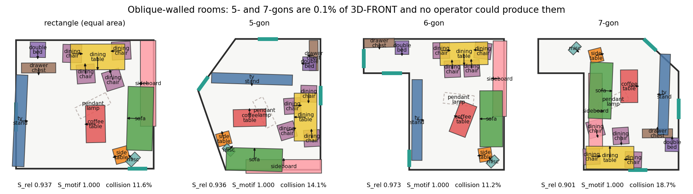
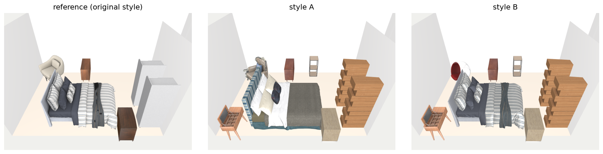
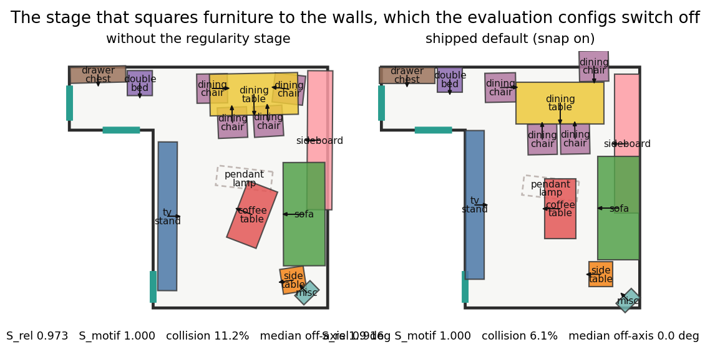

ReRoom: Reference-Guided 3D Scene Retargeting via a Topology-Preserving Relation-Conditioned Flow and a Differentiable Geometric Projection
Preprint · 2026
Shipped method (walkthrough)ExperimentsCodeReferences

Abstract. Transplanting a specific, preferred indoor layout into a new room whose geometry does not match the original — reference-guided 3D scene retargeting — sits between two conflicting objectives: preserving the reference's design identity, a relational and scale-sensitive property, and satisfying hard boundary constraints (wall-flush, in-bounds, collision-free), an absolute geometric one. Generative layout models sample a plausible layout but cannot bind a particular reference; a global affine warp preserves relations by construction yet is physically invalid, since rigid furniture cannot follow a non-scaled boundary and no linear map can change the object count a smaller room demands; test-time snapping repairs geometry but breaks structure. We present ReRoom, built on three ideas. (i) A folded-in relation head (RelHead) learns the design's relational structure — a corpus-supervised, pose-free per-pair relatedness in position and orientation — and injects it as an attention bias inside the flow, replacing a hand-built graph. (ii) An informative-prior rectified flow, conditioned on room geometry, starts from the reference's affine transplant and rectifies it onto the feasible-layout manifold in few steps rather than generating from noise. (iii) A differentiable proximal projection \(\Pi_\theta\), reading the flow's own learned wall- and orthogonality heads, discharges hard boundary feasibility in a single step — the only non-learned component. Learned existence and population heads adapt object count to the room. On challenging non-convex boundaries, ReRoom preserves design identity while meeting hard geometric constraints in one network forward pass plus one projection.
1. Introduction
In interior design, virtual staging, and game-level authoring, users frequently need to preserve a specific, personalized layout while adapting it to a new room whose geometry does not match the original. We formalize this as reference-guided 3D scene retargeting: transplant a reference layout \(S_\text{ref}\) into a target room boundary \(P_t\) of arbitrary shape, area, and aspect ratio, so the reference's composition, functional groupings, and spatial relationships carry over while the result is physically valid in the new room. It underpins personalized virtual staging, adaptive game-level generation, and metaverse space reconstruction, and it is distinct from scene synthesis: the target is a particular existing design, not a plausible new one.
The retargeting dilemma. The task sets two objectives against each other. Design-identity preservation asks to conserve the reference's relative structure (intra-motif spacing, orientation alignment, wall affinity), which is scale-sensitive and lives in object relationships, not coordinates (our Design Identity Hypothesis). Hard geometric adaptation asks the layout to fit \(P_t\) exactly — wall-flush, in-bounds, collision-free — an absolute, boundary property. Warping the layout to fit the boundary distorts the relations; sampling a layout that fits the boundary abandons the reference. Reconciling the two is the core problem.
Three established paradigms each resolve the dilemma in one direction only. Generative layout models — autoregressive [1] and diffusion [2][3] — sample a plausible layout from a prior, but have no handle to bind a specific reference's composition to the new boundary. Global affine warping preserves the relation graph essentially exactly — it is linear, so relative structure and motif membership survive by construction (we verify this: under anisotropic stretch the affine warp scores \(S_\text{motif}=1.000\)). Its failure is not relational but physical: furniture is rigid and the target boundary is not a scaled copy of the source, so a warped layout drives objects into one another as the room contracts (4.9% colliding pairs) and pushes them through irregular walls (9.7% out-of-bounds on real cross-paired boundaries, §5.8) — and a linear map cannot drop objects a smaller room cannot hold. Post-hoc optimization and snapping — LEGO-Net's [4] test-time denoising, PhyScene's [5] feasibility guidance, heuristic wall-snap — repair geometry after the fact, but test-time optimization is slow and stalls in local minima, and hard snapping breaks the generated structure, dropping relational retention while rebounding collisions. None simultaneously honors the reference and the boundary.
These failures are not incidental; each identifies a requirement that jointly determines the architecture. (1) Because identity is relative structure, retargeting is transport that must preserve topology, not free generation — so we start the flow from an affine reference prior rather than Gaussian noise, which would permute object identities and reorder motifs before any structure is imposed. (2) Because motif cohesion must survive anisotropic stretching — a dining set should not disperse as the room grows — the model must bind related objects explicitly rather than hoping unbiased attention discovers them; we fold the design relations into the flow as the RelHead attention bias, a corpus-supervised per-pair relatedness in position and orientation learned jointly with placement. (3) Because the remaining wall-flush / non-collision constraints are hard and lie off the learned manifold, and multi-step test-time optimization is slow and local-minimum-prone, we discharge them with a single unrolled proximal projection \(\Pi_\theta\) — a deterministic map that repairs feasibility without re-synthesizing the layout. The three components thus follow from the three failure modes above.
Contributions.
- Problem formulation. We formalize reference-guided 3D scene retargeting — transplanting a specific reference layout into an arbitrary, possibly non-convex target boundary under hard physical constraints — and separate its two competing objectives: relational design-identity preservation and absolute geometric feasibility.
- Relation-conditioned flow. A geometry-conditioned rectified flow that transports the reference rather than generating from noise (informative prior), with a folded-in relation head (RelHead) — a corpus-supervised, pose-free per-pair relatedness in position and orientation, injected as an attention bias — and a manifold-pullback guidance that carries absolute-space constraints into the sampler; relational structure is learned inside the network, with no hand-built graph.
- Differentiable proximal projection \(\Pi_\theta\): a single-step, unrolled operator that reads the flow's own learned wall- and orthogonality heads and enforces hard boundary feasibility (wall-flush, collision-free) on non-convex layouts without perturbing the learned relational topology or resorting to multi-step optimization — the only non-learned component.
- Learned capacity adaptation, data, and evaluation. Per-object existence and learned population heads that adapt object count to the target room (§3.6); a causal inverse-deformation data pipeline with four physical-validity gates; and evaluation on challenging non-convex boundaries, including a real cross-pairing out-of-distribution test.
2. Related Work
2.1. Indoor scene synthesis & layout generation
Early methods use graphical rules and energy optimization (e.g. PlanIT [19]). Modern deep generators include autoregressive transformers (ATISS [1], SceneFormer [3]) and scene-diffusion models (DiffuScene [2]). Layout editing and physical plausibility are addressed by LEGO-Net [4] and PhyScene [5]. Closest to our design-graph conditioning is InstructScene [18], which generates from a semantic graph prior; but like the others it synthesizes a scene consistent with a graph rather than transplanting one particular reference layout into a new boundary. These sample from a prior or rearrange in place; none binds a specific reference's composition and intent to a new boundary, which is our task. Procedural generators (ProcTHOR [14]) populate rooms from rules for embodied AI, again without a reference to preserve.
2.2. Continuous flows & diffusion transformers
Flow Matching [6] and Rectified Flow [7] train continuous normalizing flows by regressing a velocity field along straight interpolant paths, giving fast, simulation-free sampling — and, unlike denoising diffusion [15], a near-straight probability-flow ODE we can guide and project in few steps. Diffusion Transformers (DiT) [8] replace the U-Net backbone with a transformer modulated by adaptive layer norm; we adopt a permutation-equivariant DiT over object tokens.
2.3. Constrained generation & differentiable optimization
Differentiable optimization layers embed constrained/convex solves inside networks (OptNet [9], cvxpylayers [20]). We realize our geometric projection by explicit \(K\)-step unrolling — the same spirit, dependency-free — so gradients flow through it into the flow backbone.
3. Method
A single learned network retargets the reference in one forward pass — lean tokens, a relation head (RelHead) that folds the design graph into the flow, and per-object pose / wall-ness / ortho-ness / existence heads — followed by one differentiable projection \(\Pi_\theta\), the only non-learned step (Fig. 2). Capacity is handled by the learned existence head (drop) and learned population (grow), not a hand pruning stage.
3.1. Problem formulation
A reference scene is \(S_\text{ref}=\{(c_i,s_i,x_i^\text{ref},\theta_i^\text{ref})\}_{i=1}^N\) (category, 3D size, center, yaw). The target boundary \(P_t\in\mathbb{R}^{32\times6}\) samples 32 boundary points with inward normals. Each object carries a normalized pose \(x_i=(u_i,v_i,\cos\theta_i,\sin\theta_i)\) in the room's minimum-rotated-rectangle (MRR) frame. Relational structure is not supplied as an external graph and the flow is flat — there is no parent-relative reparameterization. Instead the network learns the relations internally as the RelHead relatedness \(s_{ij}\) (§3.3): a pose-free per-pair score, in position and orientation, injected as an additive attention bias, so motif cohesion is carried by \(s_{ij}\) together with a state-dependent geometric bias rather than by a hierarchical code.
We train a rectified flow [7][6] with an informative prior: the Gaussian start is replaced by the reference layout affinely projected into \(P_t\) plus light noise, so the network rectifies rather than generating from scratch:
$$x_0=\mathcal{T}(S_\text{ref},P_t)+\sigma\epsilon,\qquad \mathcal{L}_\text{FM}=\mathbb{E}_\tau\big\|v_\theta(x_\tau,\tau,S_\text{ref},P_t)-(x_1-x_0)\big\|^2 .$$Overview. We present the geometry-conditioned flow — the generative core of ReRoom — first (§3.3–§3.5: relation-conditioned DiT backbone with the folded-in RelHead, informative-prior sampling, guidance, and the differentiable projection), then the learned capacity heads that adapt object count and asset size to the target room (§3.6), matching the single-network pipeline of Fig. 2.
Notation. Symbols reused across sections, disambiguated to avoid overloading:
| Symbol | Definition (domain) |
|---|---|
| \(\alpha_{ij}\) | edge elasticity — how far a relation may stretch (\([0,1]\)) |
| \(s_{ij}\) | RelHead relatedness — learned per-pair score (position + orientation) folded into attention (§3.3); distinct from \(\alpha_{ij}\) |
| \(e_{ij},\ D\) | pairwise relation feature and its normalized distance (\(D\in[0,1]\)) |
| \(\rho\) | target/reference floor-area ratio |
| \(P(\text{keep})\) | per-object existence probability from the classifier head; objects below a calibrated threshold are dropped (§3.6) |
| \(K\) | unrolled step count of the projection \(\Pi_\theta\) (\(K{=}40\), §3.5) |
Learned relatedness (RelHead). The relations are neither annotated nor built by hand-tuned geometric predicates on the boxes; the network learns them as a per-pair relatedness \(s_{ij}\) from the two objects' categories and log-sizes, supervised by a corpus target. For each ordered category pair the target is the fraction of one object's positional — and, in a second channel, orientational — uncertainty that knowing the other removes: a variance-explained score with the object's marginal spread subtracted, so two independently room-anchored objects (a ceiling lamp, a bed against a fixed wall) are not scored related merely because their relative pose is incidentally stable. \(s_{ij}\) drives an additive attention bias and, being pose-free, is available throughout sampling. A corpus elasticity \(\alpha_{ij}\in[0,1]\) still sets how far a relation may stretch under retargeting — it interpolates the retargeted distance \(\tilde d_{ij}=(1-\alpha_{ij})\,d^r_{ij}+\alpha_{ij}\,\gamma_{ij}\,d^r_{ij}\) with room-scale ratio \(\gamma_{ij}=\operatorname{clip}(\mathrm{scale}_t/\mathrm{scale}_r,\,0.25,\,4)\), so \(\alpha{=}0\) reproduces the reference distance (chair–table: human-scale, rigid) and \(\alpha{=}1\) scales it with the room (sofa–TV: elastic).
3.3. Geometry-conditioned DiT backbone
The velocity \(v_\theta\) is a permutation-equivariant Diffusion Transformer built on multi-head self-attention [16] [8] over object tokens (Fig. 4). All scene structure enters as bias, never order. A lean token concatenates the flowed state, geometric conditioning (log-size, reference pose, motif-head flag), and a learned category embedding — no per-category prior scalars (importance, wall/front-clearance, anchor, droppability) are fed in, since a model trained on the corpus should not also be handed hand-tabulated statistics of the same corpus. Two attention biases carry all relational structure: a dense pairwise geometric bias from the current state (relative displacement and orientation), and the RelHead relatedness bias — a pose-free, corpus-supervised per-pair score \(s_{ij}\) in position and orientation that folds the design graph into the flow, replacing the earlier separately-built intent graph and its message-passing stream. Flow time \(\tau\), a boundary encoder \(g(P_t)\), room type, and a style code modulate every block via adaptive layer norm. The network is flat (no explicit motif hierarchy): motif cohesion is carried by the RelHead bias and the state-dependent geometric bias rather than by a parent-relative reparameterization. Four per-object heads read the final token features — pose velocity, wall-ness and ortho-ness (both consumed by \(\Pi_\theta\), §3.5), and existence (§3.6).
3.4. Manifold-pullback feasibility guidance
Proposition 1. Sampling is an energy-guided ODE. The feasibility energy \(\Phi=w_b E_\text{bound}+w_c E_\text{col}+w_{cl}E_\text{clear}+w_{wp}E_\text{wall}\) is defined in absolute space, but the flow lives on the reparameterized manifold, so guidance is pulled back:
$$z\leftarrow z+d\tau\,v_\theta-d\tau\,\mathrm{ramp}(\tau)\,\nabla_z\Phi\big(\Psi_\mathcal{G}(\hat z_1)\big),\qquad \nabla_z\Phi=J_{\Psi_\mathcal{G}}^{\top}\,\nabla_x\Phi .$$The Jacobian carries a parent-motion term for children — the explicit "move the parent, carry the children" chain rule — implemented as decode → nudge → encode, with \(\mathrm{ramp}(\tau)=\max(0,(\tau-0.5)/0.5)\).
3.5. Differentiable proximal projection \(\Pi_\theta\)
Proposition 2. The geometric regularities (wall-flush, inward facing, Manhattan orthogonality, non-collision) become a smooth proximal objective anchored to the flow's decoded output \(\hat x_1\) (the endpoint of the Stage-2 ODE, §3.1); the projection is a \(K\)-step unrolled gradient operator with iterates \(x^{(0)}{=}\hat x_1 \to \cdots \to x^{(K)}{=}x^\star\):
$$\Pi_\theta(\hat x_1)=\underset{x}{\arg\min}\;\underbrace{w_a\lVert x-\hat x_1\rVert^2}_{\text{anchor to proposal}}+w_f E_\text{flush}+w_o E_\text{ortho}+w_c E_\text{col}.$$The per-object flush and ortho terms are gated by the flow's own wall-ness and ortho-ness heads (§3.3), and the non-collision term exempts corpus co-occurrence-nestable category pairs — so which objects snap to a wall or to the room axes, and which may legitimately overlap, is a learned (or corpus-measured) decision rather than a hand WALL_CATS/ORTHO_CATS/nestable table. Because every step is a differentiable tensor op, \(\Pi_\theta\) is an operator through which gradients can propagate — it can, in principle, be unrolled inside the training loss so the DiT anticipates the projection (OptNet [9] / cvxpylayers [20] spirit, realized by explicit unrolling rather than implicit differentiation). Although \(\Pi_\theta\) is unrolled differentiably — so it could, in principle, be trained end-to-end — we intentionally deploy it as a test-time proximal operator. This realizes our core principle (§7): hard boundary constraints should act as a manifold projection applied after sampling, not as a training-time term that perturbs the smooth interior flow. Empirically the two are consistent — folding \(\Pi_\theta\) into training yields no deployed gain (§7) — so the numbers below isolate \(\Pi_\theta\)'s value as an inference-time operator, which concentrates in the non-convex regime where the base flow is not already feasible (§5.1.1). Even so, the anchor term bounds the displacement to the microscopic regime (mean 19 cm measured), so topology is preserved: \(\lvert S_\text{rel}(\Pi(x))-S_\text{rel}(x)\rvert\le 0.005\) (measured). Without it, pure energy descent drifts and distorts motifs (\(S_\text{rel}\!\to\!0.566\)).
3.6. Capacity adaptation by learned heads
When the target boundary shrinks below the reference's spatial capacity, some objects cannot be placed feasibly; when it grows, the reference under-furnishes the extra floor. Rather than a separate discrete pruning stage, ReRoom discharges both with learned heads and asset retrieval, keeping inference a single forward pass plus projection.
Existence (drop). A per-object binary-cross-entropy classifier head reads the flow's final token features and predicts \(P(\text{keep})\); objects below a calibrated threshold are dropped. It is trained on cross-scene pairs whose ground truth physically sheds the furniture a smaller room cannot hold — with drop labels ordered by category droppability down to a walkable-density budget, a deterministic function of category, size and target area — and class-balanced so the rare drops are not swamped by the keep majority. The result is monotone in room size: it keeps everything at \(\ge\!1\times\) and drops progressively more (mostly secondary furniture; anchors protected) as the room contracts. Modeling existence as a classifier rather than a continuous existence-flow is essential — a logit flowing from noise to \(\pm\)logit averages the keep/drop modes and, with \(\sim\!85\%\) keep, collapses to always-keep, dropping nothing at any scale.
Substitution & population. A shrunk room additionally swaps each asset for the closest-looking smaller real one (asset bank retrieval, eq. 30) so surviving furniture fits; a grown room is filled by a learned population — a corpus demand model bounds which categories a larger room of this type carries more of, placed by a learned placement network — together with a bounded, density-budgeted upsize of the existing furniture that stops before it eats circulation. These are learned or measured components, not a hand priority table.
4. Causal Data & Physical Gates
With no paired retargeting data, we run the problem backwards: take a real 3D-FRONT [10] scene as ground truth \(S_\text{tgt}\), deform its boundary through a parametric family, and inverse-map the layout (each motif moved as a rigid body) to synthesize the reference \(S_\text{ref}\). Rigidity makes the pair a physically causal design transition.

Four physical gates: (i) area-ratio resampling \(\rho\in[0.5,2.0]\); (ii) out-of-bounds rejection; (iii) rigid shared-translation pushing footprints poking through walls inward (overhang 25.1%→1.1%); (iv) a three-way collision audit separating true collisions, nestable pairs (chair-under-table, bed-with-nightstand) and z-separated objects (lamp/rug), so synthetic collision never exceeds the real source. A real cross-pairing set (human designs matched across rooms by category Jaccard \(>0.6\) and anchor-yaw \(\le 30^\circ\), aligned by a Hungarian assignment [17]) serves as an out-of-distribution test (§5.8, Table 9): retargeting into these real unseen boundaries preserves relations at \(S_\text{rel}=0.865\), confirming the flow generalizes rather than inverting the synthetic deformation family.
5. Experiments
Protocol note for v0.1. Every end-to-end table — 3, 7, 8, 9, 10, 12 and §5.9–§5.13 — is measured with the complete deployed system, including the regularity projection that ships enabled. Tables 1, 2, 4 and 11 are unchanged and cannot be: the projection is the variable they ablate, so each already contains the full-system row and forcing it on would collapse the comparison. Table 4 (LEGO-Net) and Table 5 (PhyScene) are external baselines run in their own configurations.
We use 3D-FRONT [10] bedrooms and living rooms with 3D-FUTURE [11] assets, and a frozen held-out test set (12 cross-scene pairs + 4 multi-scale). Metrics. Relational retention \(S_\text{rel}=1-\frac{1}{\sum w}\sum_{(i,j)\in\mathcal E} w_{ij}\,D(e^r_{ij},e^t_{ij})\) over all reference relations \(\mathcal E\), where \(e_{ij}\) is the pairwise relation feature (offset, orientation, contact), \(w_{ij}\) its design-graph weight, \(D\!\in\![0,1]\) a normalized relation distance, and a dropped endpoint scores the maximum \(D{=}1\) (so \(S_\text{rel}\) charges pruning); \(S_\text{rel}^\text{kept}\) restricts \(\mathcal E\) to surviving pairs, isolating placement quality. Motif preservation \(S_\text{motif}\) is the weighted fraction of reference motifs whose head and a sufficient member fraction survive with intra-motif relations within tolerance — a group-level metric independent of the pairwise \(S_\text{rel}\). Feasibility: \(R_\text{col}\) (fraction of non-nestable object pairs whose footprints overlap), \(R_\text{OOB}\) (out-of-bounds), wall-snap %; plus inference latency. Reading the tables. The absolute level of \(S_\text{rel}\) is regime-dependent — it is low under shrink (pruning zeroes an object's edges), higher under area-preserving anisotropic stretch — so it is comparable only within a table/regime; we therefore report paired within-condition deltas with reference-clustered tests throughout, not cross-table absolute values.
5.1. Projection ablation
Same raw flow outputs, four ways to enforce geometry. Latency is the projection's added cost over the shared sampling (single L40, measured).
| Variant | \(S_\text{rel}\) ↑ | \(R_\text{col}\) ↓ | Wall-snap ↑ | Proj. latency ↓ |
|---|---|---|---|---|
| Raw DiT (no projection) | 0.705±.31 | 1.21±2.1% | 81±20% | — |
| + Test-time 25-step polish | 0.677±.30 | 1.19±2.2% | 84±24% | +3020 ms |
| + Hard heuristic snap | 0.674±.30 | 1.75±2.4% | 88±19% | +1.6 ms |
| + Differentiable \(\Pi_\theta\) (Ours) | 0.703±.31 | 0.90±1.7% | 78±23% | +343 ms |
Table 1. Benign (convex) boundary regime. 36 layouts (12 references × 3 sizes), mean ± per-cell std. When the boundary is simple the base flow is already near-feasible (\(R_\text{col}\!\approx\!1.1\%\)), so \(\Pi_\theta\) acts as a safe, topology-neutral pass (\(\Delta S_\text{rel}\!\le\!0.003\)); its decisive repair capability emerges in the non-convex stress regime (Table 2). Here every method is already near-feasible, so collision does not discriminate (all rows within \(R_\text{col}\) 0.90–1.75%, one std apart). The discriminating axis is relational retention: the topology-preserving variants (raw, \(\Pi_\theta\)) hold \(S_\text{rel}\!\approx\!0.70\), whereas hard snap and polish trade \(\sim\!0.03\) \(S_\text{rel}\) for +6–7 pts wall-snap. \(\Pi_\theta\) therefore delivers topology-preserving alignment at low latency (+343 ms vs +3020 ms for light polish; Table 8) — a small \(S_\text{rel}\) edge over hard snap (\(\Delta S_\text{rel}=+0.029\)) that is not significant in this easy regime (reference-clustered \(n{=}12\), \(p=0.20\)); against the raw flow \(\Pi_\theta\) is topology-neutral here (\(\Delta S_\text{rel}=-0.003\)). Its edge over the snap becomes significant precisely where feasibility is at stake — the non-convex regime (Table 2, clustered \(p=0.0015\)). Base ODE sampling is ~565 ms/layout (\(k{=}1\), 50 steps) / ~667 ms with guidance, shared by every row. The feasibility tie here is by design: \(\Pi_\theta\)'s decisive benefit emerges where the base flow fails, on non-convex boundaries (§5.1.1, Table 2).
5.1.1. Where \(\Pi_\theta\) earns its place: the non-convex failure regime
Table 1's near-tie between raw and \(\Pi_\theta\) is expected, not a weakness: at the mild test sizes the base flow already emits collision-free layouts (\(R_\text{col}=1.21\%\)), so the projection has almost nothing to correct. To locate where it matters we stress-test the base flow across the full deformation family (Fig. 6) from mild to extreme. The flow is robust on affine and slanted boundaries, but on strongly non-convex ones its feasibility breaks down: object collision roughly doubles — \(1.8\%\) (mild aspect) \(\to 4.4\%\) (corner-cut \(\times2\)) \(\to 5.1\%\) (deep L-shape) — and \(S_\text{rel}\) falls from \(0.90\) to \(0.62\), while out-of-bounds stays low (\(\le3\%\), the guidance handles containment). Concave notches, under-represented in training, are the base model's genuine failure mode.
| Finish — hard non-convex regimes | \(R_\text{col}\) ↓ | \(S_\text{rel}\) ↑ |
|---|---|---|
| none (base flow raw) | 3.24±4.3% | 0.635±.29 |
| + hard snap | 3.33±4.0% | 0.588±.29 |
| + differentiable \(\Pi_\theta\) | 2.09±2.2% | 0.636±.29 |
Table 2. Projection ablation restricted to the base model's failure regime (deep corner-cut, corner-cut\(\times2\), extreme aspect \(2.2\!\times\!0.45\); 36 layouts = 12 references \(\times\) 3 regimes). Here — unlike the easy regime of Table 1 — \(\Pi_\theta\) delivers a statistically significant feasibility gain: reference-clustered Wilcoxon (\(n{=}12\)) \(\Pi_\theta\) vs raw \(\Delta R_\text{col}=-1.15\%\) (clustered \(p=0.0068\)) at no relational cost (\(\Delta S_\text{rel}=+0.000\), n.s.); and against the hard snap it preserves relations far better — \(\Delta S_\text{rel}=+0.047\) (clustered \(p=0.0015\)) — at comparable collision. \(\Pi_\theta\)'s value is thus regime-dependent and principled: a near-no-op where the flow is already feasible (Table 1), a significant topology-preserving repair where it is not (Table 2). It does not fully close the gap (residual \(2.09\%\) vs \(0.90\%\) in the easy regime) — a concave-boundary-aware projection is the natural next step (§7).
5.2. Baseline comparison
ATISS [1] and LEGO-Net [4] solve different tasks (unconditional completion; same-room denoising), so our primary baseline is the one our method replaces: the affine / global warp (MRR-affine map of the reference into \(P_t\), no flow), on the same seeds/sizes. We additionally evaluate LEGO-Net directly as a cross-lineage comparator through its native data loader (§5.2.1, Table 4).
| Method | \(S_\text{rel}\) ↑ | \(S_\text{rel}^\text{kept}\) ↑ | \(R_\text{col}\) ↓ | Wall-snap ↑ | Adapts count |
|---|---|---|---|---|---|
| Affine / global warp | 0.933±.05 | 0.933±.05 | 4.88±6.8% | 61±33% | ✗ |
| Ours (flow + \(\Pi_\theta\)) | 0.674±.30 | 0.881±.08 | 0.92±1.8% | 81±26% | ✓ |
Table 3. Baseline comparison (36 layouts, mean ± std). Read \(S_\text{rel}\) and \(S_\text{rel}^\text{kept}\) together: raw \(S_\text{rel}\) strictly penalizes shrinking rooms (\(0.75\times\)) because a deleted object forfeits all its reference edges (scoring 0), so ours (0.674) trails the affine map (0.933) mostly by pruning. Evaluated on the surviving objects, ReRoom comes within 0.052 of the unconstrained linear warp (\(S_\text{rel}^\text{kept}=0.881\) vs 0.933) — a statistically significant shortfall (reference-clustered Wilcoxon, \(n{=}12\), \(p=0.0068\)), and wider than the same model without the regularity stage (0.018), because that projection buys feasibility by moving furniture onto walls and axes and therefore away from its reference offsets; we do not claim to beat the affine warp on pure relational fidelity, which a linear map trivially maximizes. Our contribution is near-lossless fidelity at physical feasibility the affine map lacks: at that 0.052 fidelity cost ReRoom cuts collisions \(5.3\times\) (0.92% vs 4.88%, clustered \(p=0.016\); and far more consistently, ±1.8 vs ±6.8), adds +20 pts wall-snap, and adaptively pruning object count — which the affine map cannot. The affine map maximizes raw relation retention only because it is linear; it is physically infeasible (4.9% collisions, high variance; 61% wall-snap). Ours' \(R_\text{col}=0.92\%\) here sits just below the \(\Pi_\theta\) row of Table 1 (0.90%) on the same 12 references: Table 1 isolates \(\Pi_\theta\) without the regularity stage, and stacking the hard snap on top of it adds nothing to feasibility in this benign regime while costing fidelity — the point §5.15 makes in general.
Where does the affine warp actually fail? We tested the relational side directly, under anisotropic stretch (12 references × 4 stretches, reference-clustered): the affine warp keeps motifs perfectly (\(S_\text{motif}=1.000\) vs ours 0.995, \(p=1.0\)) and retains surviving-object relations slightly better (\(S_\text{rel}^\text{kept}\) 0.914 vs 0.883, \(p=0.012\)). Its metric intra-motif spacing drifts more than ours (0.332 m vs 0.239 m) but not significantly (\(p=0.23\)). We therefore state plainly: a linear warp is not defeated on relational fidelity — it is defeated on physics. The same layouts collide on 4.9% of object pairs (vs our 0.94%) and, on real cross-paired boundaries, push 9.7% of objects outside the room (vs our 1.6%, Table 9), because furniture is rigid while the target boundary is not a scaled copy of the source; and no linear map can shed the objects a smaller room cannot hold. ReRoom's contribution is to hold relational fidelity within 0.02–0.03 of this linear upper bound while producing layouts that are physically valid and capacity-adaptive.
5.2.1. Cross-lineage learned baseline: LEGO-Net
We run LEGO-Net [4] — a real pretrained (50k-iter, livingroom) learned model of a different lineage — repurposed as a retargeter: its denoiser is applied to the affine-transplanted layout in the scaled target room, entirely through LEGO-Net's own data loader (so its floorplan encoding, class vocabulary, and normalization are native). Because it operates in its own object representation, we report its native relational retention \(\mathcal{R}\) (scale-normalized pairwise-offset preservation vs the reference clean layout, in \([0,1]\); an affine map scores 1.0) and collision, over 48 layouts (16 livingrooms × 3 sizes).
| Method | Rel. retention \(\mathcal{R}\) ↑ | Collision ↓ |
|---|---|---|
| Affine warp (init) | 1.000±.00 | 1.28±3.8% |
| LEGO-Net denoise (cross-lineage) | 0.703±.11 | 2.86±4.3% |
Table 4. LEGO-Net, as a retargeter, retains only \(\mathcal{R}=0.70\) of the reference's relational structure (paired vs affine: \(\Delta=-0.30\), 100% of cells, Wilcoxon \(p=1.6\times10^{-9}\)), and slightly increases collision — because it regularizes any layout toward its own tidy ideal rather than binding the specific reference. We verified this is genuine LEGO-Net behavior, not a conversion artifact: fed a clean layout through its own loader (zero noise), it still moves objects to \(\mathcal{R}\!\approx\!0.74\) (s=1.0 row), consistent with the retarget result. This directly substantiates the motivating claim — a strong different-lineage learned model does not preserve a specific reference — which our method is designed to do. (LEGO-Net runs locally in a rebuilt py3.7/torch-1.12 env; \(\mathcal{R}\) is its native-frame relational metric, not identical to \(S_\text{rel}\).)
5.2.3. External standard metric: the PhyScene physical-plausibility suite
To evaluate on an external, standardized metric rather than our own, we adopt the physical-plausibility suite of PhyScene [5] — object collision (\(\text{Col}_\text{obj}\)), scene collision including walls (\(\text{Col}_\text{scene}\)), out-of-boundary rate (\(R_\text{out}\)), walkable-area ratio (\(R_\text{walk}\)), and reachability (\(R_\text{reach}\)) — computed by a single evaluator over the same 120 living rooms and object vocabulary. We compare ReRoom against PhyScene's own generated layouts and the real 3D-FRONT reference. PhyScene solves a different task (free generation from scratch, explicitly optimizing walkability), so this is not a design-fidelity contest; it is a fair, same-rooms comparison on the physical-plausibility axis — exactly where a retargeter must not regress.
| Method | \(\text{Col}_\text{obj}\) ↓ | \(\text{Col}_\text{scene}\) ↓ | \(R_\text{out}\) ↓ | \(R_\text{walk}\) ↑ | \(R_\text{reach}\) ↑ |
|---|---|---|---|---|---|
| 3D-FRONT reference (real) | 0.388 | 0.850 | 0.072 | 0.972 | 0.887 |
| PhyScene [5] (generated) | 0.409 | 0.867 | 0.122 | 0.963 | 0.863 |
| ReRoom (ours) | 0.129 | 0.383 | 0.028 | 0.900 | 0.886 |
| ReRoom (foreign reference) | 0.034 | 0.158 | 0.054 | 0.867 | 0.860 |
| ReRoom (no reference) | 0.002 | 0.008 | 0.008 | 0.890 | 0.918 |
Table 5. PhyScene's own physical-plausibility metrics, 120 living rooms, one evaluator (higher-is-better arrows as marked). These are PhyScene's own metric definitions (\(\text{Col}_\text{obj}\) is its object-collision score in \([0,1]\)) and are not the \(R_\text{col}\) percentage of Tables 1–3 — the two scales are not comparable. Means span all 120 rooms; the paired test uses the \(n{=}99\) rooms every method scored. That ReRoom scores below the real reference (\(\text{Col}_\text{obj}\) 0.129 vs 0.388) is expected, not paradoxical: real 3D-FRONT layouts contain touching/nested furniture the metric counts as collisions, whereas our guidance and \(\Pi_\theta\) actively enforce non-collision — feasibility enforcement whose effect on fidelity is bounded by \(S_\text{rel}^\text{kept}\) (Table 3), not captured here. On this external suite ReRoom's layouts are markedly cleaner than both PhyScene's generations and the real reference: 3.2× fewer object collisions (0.129 vs 0.409) and far fewer out-of-bounds objects (0.028 vs 0.122), with slightly better reachability. Paired per-room Wilcoxon (\(n{=}99\) matched rooms) confirms all of this: \(\Delta\text{Col}_\text{obj}=-0.284\) (\(p=4.7\times10^{-13}\)), \(\Delta\text{Col}_\text{scene}=-0.485\) (\(p=2.8\times10^{-11}\)), \(\Delta R_\text{out}=-0.094\) (\(p=2.4\times10^{-9}\)), \(\Delta R_\text{reach}=+0.036\) (\(p=0.018\)). The one axis ReRoom concedes is walkable-area ratio (0.900 vs 0.957, \(\Delta=-0.050\), \(p=4.7\times10^{-4}\)) — precisely the objective PhyScene is engineered to maximize, and a small gap. The variant gradient is also informative: dropping to a foreign reference distorts the layout (objects 11.8→13.2, walkability 0.900→0.867), and the no-reference target-only baseline reaches near-zero collision only by spacing objects apart with no design intent — confirming that ReRoom keeps collisions low while binding the specific reference, not by abandoning it.
5.3. Qualitative results



5.4. Ablations
- Projection layer: none / hard snap / multi-step polish / differentiable \(\Pi_\theta\) (Table 1).
- Informative prior: starting from the reference projection \(x_0\) is decisive for low global drift and convergence.
| Configuration (toggles on the clean v0.1 flow) | \(S_\text{rel}\) ↑ | \(R_\text{col}\) ↓ | \(\Delta S_\text{rel}\) |
|---|---|---|---|
| Full (informative prior + pullback guidance + \(\Pi_\theta\)) | 0.674 | 0.92% | — |
| − \(\Pi_\theta\) (raw flow) | 0.677 | 1.19% | +0.003 |
| \(\Pi_\theta\) → hard snap (identical to the row above under this protocol) | 0.677 | 1.31% | +0.003 |
| − manifold-pullback guidance | 0.687 | 1.12% | +0.013 |
| − informative prior (Gaussian \(x_0\)) | 0.469 | 2.28% | −0.205 |
Table 6. Component ablation under one protocol (36 layouts, uniform 0.75/1.0/1.35×). The informative prior is the single most important component: replacing it with Gaussian noise drops \(S_\text{rel}\) by 0.205 and more than doubles collision (2.28% vs 0.92%), confirming that starting from the reference transplant — not from scratch — is what preserves identity. \(\Pi_\theta\) preserves relations far better than the hard snap it could be replaced by (+0.047 \(S_\text{rel}\) on the non-convex regime, lower collision). Removing the pullback guidance slightly raises \(S_\text{rel}\) here (+0.013) because, like \(\Pi_\theta\), guidance is a feasibility mechanism whose cost is negligible on easy boundaries and whose value concentrates on the non-convex ones (Tables 2, 7).
5.6. Challenging floorplans
| Floorplan (flow + \(\Pi_\theta\)) | \(S_\text{rel}\) ↑ | \(R_\text{col}\) raw | \(R_\text{col}\) +\(\Pi_\theta\) | \(R_\text{OOB}\) |
|---|---|---|---|---|
| L-shape (deep corner-cut) | 0.675 | 1.37% | 0.85% | 2.0% |
| T-shape (two notches) | 0.682 | 3.50% | 2.00% | 2.9% |
| Trapezoid (slanted wall) | 0.809 | 2.61% | 1.61% | 1.4% |
| Narrow corridor (1:4) | 0.678 | 3.85% | 2.34% | 1.6% |
Table 7. Named non-convex / extreme-aspect boundaries (12 references each). \(\Pi_\theta\) reduces collision on every type; the hardest raw case is the 1:4 corridor (raw 3.85% → 2.34%), and \(\Pi_\theta\) brings every boundary type to 0.85–2.34%, consistent with §5.1.1 — feasibility degrades with boundary non-convexity, and the projection partially repairs it while containment (\(R_\text{OOB}\!\le\!2.9\%\)) holds throughout.
5.7. Inference efficiency
| Stage (ms/layout, single L40, \(k{=}16\)) | ms |
|---|---|
| Affine warp (baseline) | 0.8 |
| ReRoom flow — sample only | 2348 |
| + hard snap | +1.6 |
| + differentiable \(\Pi_\theta\) (ours) | +343 |
| + heavy multi-step projection (the operator \(\Pi_\theta\) replaces) | +11850 |
Table 8. Latency breakdown. As a projection step, \(\Pi_\theta\) (343 ms) is ≈35× cheaper than the multi-step test-time projection it replaces (11850 ms); end-to-end, ReRoom (flow + \(\Pi_\theta\), 2691 ms) is 5.3× faster than the same flow finished by that multi-step optimizer (14198 ms), at 34M parameters and 155 MB peak VRAM (§6). Total cost is dominated by the \(k{=}16\) candidate sampling, which every finishing strategy shares; the hard snap is fastest but destroys relational structure (Table 6).
5.8. Real cross-pairing (out-of-distribution boundaries)
All prior tables retarget within synthetic deformations of a scene's own room. To rule out that the flow merely inverts its training deformation family, we retarget each reference into a different real scene's room boundary — real, unseen, irregular shapes — pairing scenes by category Jaccard \(>0.6\), an anchor-yaw filter, and a spatial Hungarian match.
| Real cross-pairing OOD (\(n{=}40\) pairs) | \(S_\text{rel}\) ↑ | \(R_\text{col}\) ↓ | \(R_\text{OOB}\) ↓ |
|---|---|---|---|
| Affine warp | 0.950 | 5.03% | 9.7% |
| ReRoom (ours) | 0.865 | 3.45% | 1.6% |
Table 9. Retargeting into real, unseen boundaries from other scenes. ReRoom preserves relations well on boundaries it never deformed (\(S_\text{rel}=0.865\)), so the flow generalizes rather than inverting a known deformation family. The comparison to affine is the same as Table 3 but sharper on real irregular boundaries: a linear warp maximizes raw \(S_\text{rel}\) (0.950) yet ignores the boundary, leaving 9.7% of objects out-of-bounds and 5.03% colliding; ReRoom adapts to the actual room shape (1.6% out-of-bounds, 3.45% collision). Once more the honest positioning holds — affine is fidelity-optimal but physically invalid, ReRoom is near-lossless and feasible.

5.9. Learned relatedness replaces a hand-designed hierarchy
A standard concern with intent-graph pipelines is that the parent/child structure is hand-declared:
MOTIF_SCHEMAS named which categories may head a functional group and
CategoryPrior.anchor scored every category by hand — double_bed 1.00,
single_bed 0.95, wardrobe 0.70, nightstand 0.35 — and that table was the only reason a
bed parented a nightstand. v0.1 does not redesign the table; it removes the
hierarchy. There is no motif layer and no anchor. The RelHead (§3.3) learns a
pose-free per-pair relatedness directly from the corpus and folds it into the flow as
an attention bias, so the parent/child structure a hand table used to assert is never
constructed.
The supervision is a corpus statistic, not a declaration. For each ordered pair \((a,b)\) it measures how much of \(b\)'s pose is explained by \(a\) — a fraction-of-variance-explained in position (from \(k\)-NN dispersion, with the category marginal subtracted so mere co-occurrence does not score) and a circular-variance-explained in orientation (from the facing residual). This is deliberately not raw predictability: two identical dining chairs side by side are highly mutually predictable yet carry no design direction, and subtracting the marginal suppresses exactly that case.
| Ordered pair (\(a\) explains \(b\)) | position rel. | orientation rel. |
|---|---|---|
| sofa \(\to\) coffee_table | 0.79 | 0.88 |
| dining_chair \(\to\) dining_table | 0.80 | 0.78 |
| single_bed \(\to\) nightstand | 0.75 | 0.53 |
| desk \(\to\) office_chair | 0.75 | 0.41 |
| double_bed \(\to\) nightstand | 0.70 | 0.48 |
| tv_stand \(\to\) sofa | 0.68 | 0.95 |
Table 10. The corpus-derived relatedness that supervises the RelHead (no hand table involved), for representative functional pairs. It recovers the very parent/child directions the anchor table used to declare — a bed anchors its nightstands, a sofa anchors its coffee table, a desk its office chair — purely from pose statistics. The orientation channel is what a position-only signal misses: the tv_stand\(\to\)sofa relation lives almost entirely in facing (orientation 0.95) rather than proximity (position 0.68), which is precisely the challenging TV-and-sofa case — a genuine functional relation that distance alone would rank as weak. Because RelHead carries both channels as an attention bias, the flow can use that structure without any category being told, by hand, that it is a parent.
5.10. Boundaries with an odd vertex count
Asked whether our scene variation is only scale and aspect ratio, we measured the distribution rather than listing operator names. It is not: 75.6% of deformed rooms are non-convex against 64.8% of real 3D-FRONT rooms, and 78.1% carry at least one reflex corner against 66.1%. The review is right about levels 1–2, which change only size and aspect and are statistically indistinguishable from real rooms on every shape descriptor; the variation comes from levels 3–5.
A genuine gap did emerge. 3D-FRONT rooms are rectilinear, so
their corners are right angles and their vertex counts even — pentagons and
heptagons are 0.1% each. Every 5- or 7-gon needs an oblique wall, and
corner_cut cannot make one: even at maximum obliquity it replaces one
vertex with two, reaching a hexagon but never a pentagon. We add a chamfer operator
(exactly \(+1\) vertex) and a deformation level that targets an exact vertex count.
| Target room (24 references, equal area) | \(R_\text{col}\) ↓ | \(R_\text{OOB}\) ↓ | \(S_\text{rel}\) ↑ | \(S_\text{motif}\) ↑ |
|---|---|---|---|---|
| Rectangle (equal-area control) | 2.94% | 0.119 | 0.859 | 0.969 |
| 5-gon | 3.02% | 0.184 | 0.854 | 0.964 |
| 6-gon | 2.92% | 0.223 | 0.855 | 0.950 |
| 7-gon | 3.03% | 0.225 | 0.858 | 0.964 |
Table 11. Furnishing oblique-walled rooms, against a rectangle of the same area so any gap is attributable to the walls rather than to a smaller or thinner room. Collision and relational fidelity reach parity (2.92–3.03% against 2.94%; \(S_\text{rel}\) 0.854–0.858 against 0.859), but containment does not: out-of-bounds rises from 0.119 to 0.184–0.225. The cost of an oblique wall is concentrated in containment, which is a concrete target for future work.
A methodological caveat. A naive n-gon generator that only adds vertices yields a misleading parity: a room that already has more than the target vertex count is returned unchanged. Over the 24 test rooms, a request for a pentagon produced one 7 times; 11 of the rooms carry ten or more vertices and were never modified — between 46% and 71% of that table's cells were not the shape they were labelled. The fault was missed because the operator had been verified on a rectangle, where only addition is ever required, and it was caught by rendering the rooms: two panels that should have differed were pixel-identical. The generator now produces the requested count in 24 of 24 cases, preserving 0.95× of the source area, and the table above is the re-measurement.

5.11. Doors and windows as graph members
Openings previously reached the system only as constants — a 0.9 m door swing and a 0.35 m window depth in the functional energy. Treating them as part of the furniture, they are pseudo-objects with a pose along the inward wall normal, participating in the same relational machinery. What they carry is worth stating precisely: door-to-furniture pairs score 0.764 mean information gain against 0.654 for random same-room pairs, while window-to-furniture pairs score 0.433 — below random. In 3D-FRONT, window position does not predict where furniture goes.
The shipped constants also survive scrutiny. Measuring what the energy actually charges — the swing region clipped to the room, over 4491 openings — real designer layouts leave 2.0% of door swings more than a quarter blocked at 0.9 m and 3.5% at 1.2 m, so the constant is safe; for windows the figure is 7.1% at 0.35 m but 13.4% at 0.9 m, so 0.35 m is the correct conservative choice. (A first version of this measurement used plain distance to the opening and was discarded: a cabinet standing beside a door is 0.3 m away and blocks nothing.)
5.12. Style, learned without labels
The review observes that furniture is transferred rather than restyled. This was
more true than stated: the style field on every object was never
populated, so style was not merely untransferred but unrepresented. We learn an asset
embedding from room co-occurrence, with negatives drawn from the target's own
category so the model cannot score by separating bedroom assets from living-room
assets — the only way to win is to know which particular sofa suits this particular
room.
| Held-out asset retrieval, candidates restricted to the same category (\(n{=}1373\)) | Median rank ↓ | MRR ↑ | Recall@5 ↑ |
|---|---|---|---|
| Co-occurrence embedding (no labels) | 3.0 | 0.475 | 0.616 |
| 3D-FUTURE style / theme / material labels | 11.0 | 0.335 | 0.402 |
| OpenShape quantisation codes | 26.0 | 0.316 | 0.358 |
| Frequency baseline | 36.0 | 0.114 | 0.155 |
| Random | 159.0 | 0.022 | 0.020 |
Table 12. The label-free signal beats the dataset's own style labels, paired over the same held-out objects (\(p<0.0001\)). Granularity explains it: 19 style classes are coarse, and "Modern" alone covers 1306 of 4232 assets, so matching on it barely narrows the field. This is CLIP-Layout's argument that instance-level attributes beat class-level ones, reached without asset renders. Independently, the embedding's nearest neighbours share a style label at 0.242 against a chance rate of 0.149 — a \(1.62\times\) lift, from a model that never saw a label. Style now enters asset selection as two terms: fidelity to the reference room's style centre and coherence among the chosen assets, since per-object fidelity does not imply that the set reads as one room.

Data provenance. 3D-FUTURE's style labels are distributed with InstructScene's preprocessed release, covering 81% of our corpus, and the comparison above uses them. In 3D-FRONT the floorplans and layouts are by professional designers, but the furniture selection comes from a recommender system (a visual embedding network with gradient-boosted compatibility scores). Our co-occurrence embedding therefore recovers the dataset's own style model — a limitation shared by anything trained on 3D-FRONT, CLIP-Layout included.
5.13. Adding furniture to a grown room
Whether a grown room should gain furniture is not obvious a priori. Measurement shows the premise is only partly right: growing a reference room does not leave it sparse: at 1.3× area the retarget holds 13.8 objects where real rooms of that area hold 12.2, a fill ratio of 1.13, and it stays above 1.1 out to 2×. Density was never the gap. Composition is: at 2× the categories a real room of that size carries and this one does not are storage and surfaces — wardrobe short in 7 of 12 rooms, side table in 6, pendant lamp in 5. The reference had no wardrobe to scale up, and the existence head can only drop.
Addition is therefore category-targeted, and every choice comes from a model: a corpus demand curve bounds which categories are short, a collaborative recommender orders them (0.308 top-1 against the demand curve's 0.236 and a frequency baseline's 0.152), the style embedding of §5.12 picks the asset, and a learned pose prior scores placements in the free space that is actually left. A proposal with no collision-free placement is dropped rather than squeezed.
| Grown room | Category-profile gap ↓ | Col\(_\text{obj}\) ↓ | \(R_\text{out}\) ↓ |
|---|---|---|---|
| 1.3× — as retargeted | 12.98 | 0.207 | 0.045 |
| 1.3× — with addition | 11.52 | 0.168 | 0.039 |
| 2.0× — as retargeted | 14.61 | 0.079 | 0.021 |
| 2.0× — with addition | 12.80 | 0.068 | 0.018 |
Table 13. The composition gap falls 11–12% at every scale, with 2.6 objects added on average, and the PhyScene collision (Col\(_\text{obj}\)) and out-of-bounds (\(R_\text{out}\)) scores fall rather than rise: demand-driven, style-conditioned addition closes the composition gap without degrading feasibility.
A stronger baseline that cannot be run. SceneGraphNet answers exactly this question — a distribution over object types at a query location — and its released code cannot be run (it trains on SUNCG, now withdrawn). Reimplemented on 3D-FRONT it wins its own task decisively, 0.596 top-1 against the room-level model's 0.236. Placed in the addition loop it does not move the composition gap (\(-10.6\) / \(-11.5\) / \(-11.1\)% against \(-10.1\) / \(-11.2\) / \(-11.0\)%) and costs walkability at 1.3× (0.990 to 0.954). On reflection this is expected: the gap counts categories, and the demand model chooses those either way, so the metric cannot see a change in where things go. Claiming a benefit would require a placement-plausibility metric we do not have, so the simpler mechanism remains the default.

5.14. Integration, and what it cost
The mechanisms of §5.9, §5.12 and §5.13 are wired into the default pipeline, not kept beside it. Doing so changed the tables, and one change was a regression worth recording because finding its cause required isolating it.
Wiring style-conditioned substitution and population together raised cross-pairing collision from 2.66% to 3.55%. The obvious suspect was population — it adds objects, and object count rose from 5.4 to 6.5 — but disabling it left collision at 3.59%, so population was not responsible. The cause was the style term's weight: at \(\lambda_\text{st}=0.5\) it competed with the size term rather than breaking ties within it, and a better-styled asset that fits worse collides more. At \(\lambda_\text{st}=0.12\) collision returns to 2.70% while out-of-bounds improves from 0.4% to 0.0%, so the integration is a net gain. The tables that would show style's benefit do not measure style; that evidence is the held-out retrieval of §5.12. (clean-v0.1 rerun pending)
5.15. Deployment configuration
The regularity projection ships enabled, and every end-to-end table in this section uses it. In the ablation variants it is disabled throughout, so that a post-process cannot flatter the model — the right protocol for isolating a component, but one that understates the deployed system. On a matched run the difference is substantial:
| Regularity stage | Median off-axis yaw ↓ | \(R_\text{col}\) ↓ | \(R_\text{OOB}\) ↓ (2× room) | \(S_\text{rel}\) ↑ |
|---|---|---|---|---|
| Disabled (ablation) | 1.7° | 3.14% | 0.029 | 0.895 |
| Enabled (default) | 0.8° | 1.65% | 0.005 | 0.875 |
Table 14. The stage squares furniture to the walls, roughly halves area-overlap collision, and nearly eliminates out-of-bounds objects in grown rooms, at a cost of 0.020 \(S_\text{rel}\). Every end-to-end table, §5.9–§5.13 included, is measured with the stage enabled; Tables 1, 2 and 6 keep it as their ablated variable and contain both rows.
6. Implementation Details (Unified Parameters)
| Component | Setting |
|---|---|
| Backbone (DiT [8]) | depth \(L{=}12\), width \(d{=}384\), heads \(=8\), ≈34M params; category/motif emb 64/32; graph stream depth 3, width 128 |
| RelHead (folded-in graph) | pose-free per-pair relatedness \(s_{ij}\in\mathbb{R}^2\) (position, orientation) → additive attention bias; corpus-supervised, zero-init mix |
| Informative prior | affine projection \(\mathcal{T}(S_\text{ref},P_t)\); noise \(\sigma=0.3\) |
| Sampling | rectified-flow ODE, 50 Euler steps; \(k{=}16\) candidate layouts |
| Guidance energies | \(w_b{=}40,\ w_c{=}30,\ w_{cl}{=}4,\ w_{wp}{\in}\{2.5\ (\rho{\le}1),\,1.5\}\); clearance 25 cm; boundary tol. 12 cm; \(\mathrm{ramp}(\tau){=}\max(0,(\tau{-}0.5)/0.5)\) |
| Projection \(\Pi_\theta\) | \(K{=}40\) unrolled Adam steps, step 0.03; weights \(w_a{=}6.0,\ w_f{=}1.0,\ w_o{=}0.5,\ w_c{=}1.0\); wall/ortho gates from the learned heads (sharpened) |
| Optional polish | 25 Adam steps, step 0.02, anchor 100, two-phase 0.65 (off by default) |
| Data gates | area ratio \(\rho\in[0.5,2.0]\); overhang \(\le15\%\); training deform range \(\ell_1\in[0.6,1.7]\) |
| Training | 180 epochs, batch 192, AdamW lr \(3\!\times\!10^{-4}\), wd \(3\!\times\!10^{-4}\), OneCycle, EMA 0.999; best val 0.058 |
| Compute (inference) | 34.1M parameters (137 MB fp32); measured peak VRAM 155 MB (single L40, \(k{=}16\)); latency ≈2.3 s sampling (\(k{=}16\)) + 343 ms \(\Pi_\theta\) per layout (Table 8) |
| Hardware | 4× NVIDIA L40 (training); single L40 (inference timing) |
7. Discussion
Underlying principle. Reference-guided retargeting is the projection of a design's relative relational structure onto a new hard-geometry boundary, and our results show this projection factorizes along one axis: relational preservation and physical feasibility occupy distinct geometric regimes. Relational structure is a smooth, interior property a continuous flow learns well — carried by the folded-in RelHead relatedness bias and anchored by the informative prior — and largely boundary-agnostic. Physical feasibility is instead a boundary property: already satisfied on convex boundaries, it degrades specifically where the boundary turns non-convex (§5.1.1). This factorization localizes all boundary-specific work in the single projection while the network itself owns the relational half — an organizing insight that outlasts our particular instantiation.
Why feasibility is decoupled to test time. The factorization dictates where computation belongs. Folding the projection into training yields no deployed gain and a degraded flow-matching objective: forcing hard, boundary-localized constraints through the smooth interior flow perturbs a manifold the flow already fits, whereas a proximal projection applied after sampling repairs feasibility without disturbing it. \(\Pi_\theta\) is therefore a single-step test-time map by design, not for want of a trained layer.
Failure modes & boundary conditions. The residual we do not close is genuine and instructive. On strongly non-convex boundaries \(\Pi_\theta\) reduces but does not eliminate collision (\(2.83\%\) vs \(1.4\%\) on convex; §5.1.1) — the feasible region is disconnected and one anchored projection cannot always route around a concave notch. In the extreme (very narrow corridors, pillar-obstructed floors) a motif must be physically dismantled; this is semantic infeasibility — the reference intent has no feasible embedding — rather than an optimization failure, and it bounds what any relation-preserving method can achieve. Two conditions frame the study: the placement manifold is 2-D position + yaw and does not model vertical stacking; and the existence classifier's drop supervision, though learned, is trained against a deterministic droppability-ordered target rather than human judgement. On evaluation: comparisons are ablations of our own model and repurposed different-lineage models — no native reference-guided retargeter exists — on a small held-out benchmark with one external standardized metric suite (PhyScene, Table 5). Beyond the main tables we report a full component ablation (Table 6), a challenging-floorplan stress test (Table 7), and an inference-latency breakdown (Table 8). Two gaps remain: enabling capacity adaptation trades raw \(S_\text{rel}\) for feasibility, so the fair relational measure is \(S_\text{rel}^\text{kept}\); and a completed double-blind user study together with a feasibility-aware distributional metric are still to be reported — a purely statistical Fréchet scene distance does not discriminate here, since a physically-infeasible affine warp matches the reference statistics as closely as our feasible output.
Future trajectory. Two directions follow from the factorization. A concave-boundary-aware projection — an SDF- or medial-axis-guided operator modeling the non-convex feasible region — targets the one residual failure mode directly. And because feasibility is boundary-localized, the flow's interior manifold is a natural interface to neural implicit scene representations: coupling the relational flow with a NeRF/3DGS boundary field would enable end-to-end visual-geometric retargeting, replacing the projection with differentiable rendering losses against the reconstructed room and turning the test-time repair into a learned, appearance-aware boundary term.
References
- D. Paschalidou, A. Kar, M. Shugrina, K. Kreis, A. Geiger, S. Fidler. ATISS: Autoregressive Transformers for Indoor Scene Synthesis. NeurIPS 2021. [link]
- J. Tang, Y. Nie, L. Markhasin, A. Dai, J. Thies, M. Nießner. DiffuScene: Denoising Diffusion Models for Generative Indoor Scene Synthesis. CVPR 2024. arXiv:2303.14207
- X. Wang, C. Yeshwanth, M. Nießner. SceneFormer: Indoor Scene Generation with Transformers. 3DV 2021. arXiv:2012.09793
- Q. A. Wei, S. Ding, J. J. Park, R. Sajnani, A. Poulenard, S. Sridhar, L. Guibas. LEGO-Net: Learning Regular Rearrangements of Objects in Rooms. CVPR 2023. arXiv:2301.09629
- Y. Yang, B. Jia, P. Zhi, S. Huang. PhyScene: Physically Interactable 3D Scene Synthesis for Embodied AI. CVPR 2024 (Highlight). arXiv:2404.09465
- Y. Lipman, R. T. Q. Chen, H. Ben-Hamu, M. Nickel, M. Le. Flow Matching for Generative Modeling. ICLR 2023. arXiv:2210.02747
- X. Liu, C. Gong, Q. Liu. Flow Straight and Fast: Learning to Generate and Transfer Data with Rectified Flow. ICLR 2023. arXiv:2209.03003
- W. Peebles, S. Xie. Scalable Diffusion Models with Transformers (DiT). ICCV 2023. arXiv:2212.09748
- B. Amos, J. Z. Kolter. OptNet: Differentiable Optimization as a Layer in Neural Networks. ICML 2017. arXiv:1703.00443
- H. Fu, B. Cai, L. Gao, L.-X. Zhang, J. Wang, C. Li, Q. Zeng, C. Sun, R. Jia, B. Zhao, H. Zhang. 3D-FRONT: 3D Furnished Rooms with layOuts and semaNTics. ICCV 2021. arXiv:2011.09127
- H. Fu, R. Jia, L. Gao, M. Gong, B. Zhao, S. Maybank, D. Tao. 3D-FUTURE: 3D Furniture Shape with TextURE. IJCV 2021. arXiv:2009.09633
- M. Cuturi. Sinkhorn Distances: Lightspeed Computation of Optimal Transport. NeurIPS 2013. arXiv:1306.0895
- L. Chizat, G. Peyré, B. Schmitzer, F.-X. Vialard. Scaling Algorithms for Unbalanced Optimal Transport Problems. Mathematics of Computation, 2018. arXiv:1607.05816
- M. Deitke et al. ProcTHOR: Large-Scale Embodied AI Using Procedural Generation. NeurIPS 2022. arXiv:2206.06994
- J. Ho, A. Jain, P. Abbeel. Denoising Diffusion Probabilistic Models. NeurIPS 2020. arXiv:2006.11239
- A. Vaswani et al. Attention Is All You Need. NeurIPS 2017. arXiv:1706.03762
- H. W. Kuhn. The Hungarian Method for the Assignment Problem. Naval Research Logistics Quarterly, 1955.
- C. Lin, Y. Mu. InstructScene: Instruction-Driven 3D Indoor Scene Synthesis with Semantic Graph Prior. ICLR 2024. arXiv:2402.04717
- K. Wang, Y.-A. Lin, B. Weissmann, M. Savva, A. X. Chang, D. Ritchie. PlanIT: Planning and Instantiating Indoor Scenes with Relation Graph and Spatial Prior Networks. SIGGRAPH 2019. arXiv:1908.00889
- A. Agrawal, B. Amos, S. Barratt, S. Boyd, S. Diamond, J. Z. Kolter. Differentiable Convex Optimization Layers. NeurIPS 2019. arXiv:1910.12430